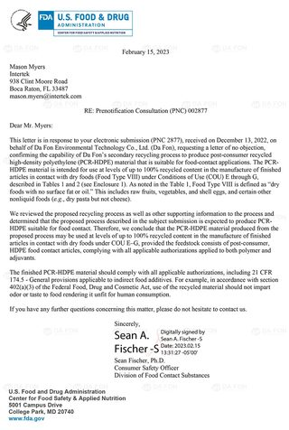

FDA NOL 認證
問題：放的是 EuCertPlast 證書，不是 FDA 文件，而且已過期。
- 換成
certificate_pic14_b.jpg（HDPE，PNC 2877）和certificate_pic15_b.jpg（PP，PNC 2840），兩張都已在網站伺服器上。 - PP 函的圖片看不到簽名，請改用有簽名的版本。
- 說明改為「FDA NOL 不反對函（HDPE／PP）」。NOL 不是認證，函中適用範圍僅限乾性食品（Food Type VIII、COU E–G）。
- EuCertPlast 若有新證可另立一項，沒有就下架。